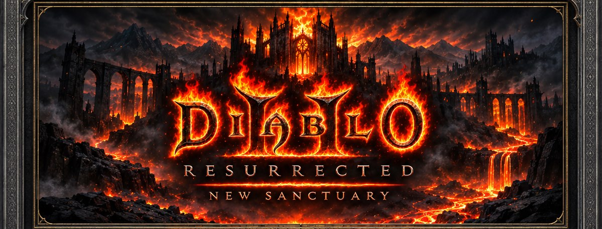
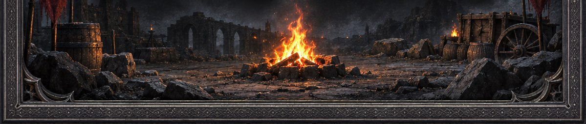

New Sanctuary to niezależny projekt rozwijający Diablo II: Resurrected, którego celem jest dostarczenie graczom nowych możliwości rozgrywki, innowacyjnych mechanik i świeżego spojrzenia na kultowe Diablo II.

Projekt nie jest związany z firmą Blizzard Entertainment. Diablo II: Resurrected jest znakiem towarowym Blizzard Entertainment.
